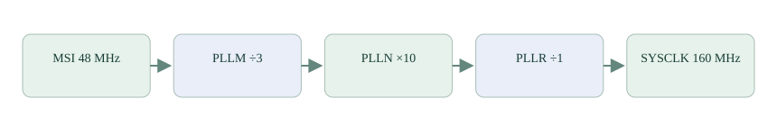

时钟：这些“每秒多少次”从哪里来？
串口、屏幕和采样都已经用到了频率。现在回头从时钟源开始，沿分频与倍频走到处理器、总线和外设，把这些频率各自由谁决定说清楚。
项目必需的外设与通信已经在 DMA 篇收束。本篇与后面的定时器、看门狗拓展补充其他嵌入式项目也需要掌握的知识。可以依次阅读，最后回到 裸机逻辑综合；也可以先完成项目综合再来深入。
第 1 节 · 芯片为什么需要时钟？
电路需要按一定节奏完成状态更新。时钟信号周期性变化，每秒重复多少次，就是频率；例如 1 MHz 表示每秒一百万次。处理器和外设利用这样的节奏完成内部工作，但“时钟跳一次”不等于“程序完整执行一条 C 语句”。
时钟最初来自振荡电路。芯片内部有振荡器，板外也可以接晶振或外部时钟。选哪一种，需要考虑可用频率、精度、功耗和启动时间。项目中出现的 MSI、HSI、LSI 是不同内部时钟源的名称，第一次读配置时，先认出它们是“提供节奏的来源”。
频率也可以换成周期：每次间隔＝1÷频率。1 MHz 的一拍为 1 微秒；串口 115200 位每秒，一个位约占 8.68 微秒。后者由串口自己的时钟与分频配置生成，不能把 CPU 的每一拍直接当作串口的一位。
第 2 节 · 为什么要分频，还要倍频？
一个可用时钟不一定恰好等于目标频率。分频让节奏变慢，例如 16 MHz 除以 2 得到 8 MHz。锁相环可以在一定合法范围内从已有来源生成更高频率，英文缩写为 PLL；配置中还可能在前后安排分频。
项目主系统时钟从 MSI 的 48 MHz 出发，先除以 3，得到 16 MHz，再乘以 10，得到 160 MHz，最后输出除以 1，得到 160 MHz：

源码中的 PLLM、PLLN、PLLR 对应这条路径的分频、倍频、输出分频。计算式为“来源÷M×N÷R”。它帮助理解数值，但电路还限制输入范围、内部频率范围和工作电压，不能随便填写一组只在算术上成立的数。
项目还配置稳压等级、PLL 输入范围和 Flash 等待周期。它们是芯片能否在目标频率下可靠工作的条件，需要沿芯片参考手册和生成配置核对；学习频率计算不意味着直接改动当前手表设置。
第 3 节 · CPU 是 160 MHz，为什么声音不是每秒采一亿六千万次？
芯片内部有多条时钟路径。系统时钟先分给处理器和内部总线；外设可能再从总线或另一个独立来源取得工作时钟，再在内部继续分频。
| 路径 | 本项目怎么理解 |
|---|---|
| 处理器与总线 | 从系统时钟分配，配置分别决定系统与各总线频率 |
| SPI2 | 使用选定来源，再分频生成屏幕串行时钟 |
| USART1 | 使用外设来源，按波特率配置产生位时序 |
| ADC1 | 选 HSI 来源再除以 2，内部采样、转换和累加需要更多周期 |
| 实时时钟与独立看门狗 | 使用低速内部来源，精度和高速主时钟不同 |
所以 ADC 内核每秒经历多少时钟周期，与最后一秒取得多少输出样本之间，还隔着采样时间、转换时间和过采样处理。传感器自身的每秒 104 次或 100 次，也来自各自芯片里的采样电路，并非 STM32 改主频就自动一起改变。
“开启 GPIO 时钟”是允许相应外设电路得到时钟，“把 CPU 配成 160 MHz”是配置主路径的频率，两者用途不同。读到 __HAL_RCC_GPIOA_CLK_ENABLE 时，不要把它当作正在设置 GPIO 输出方波频率。
第 4 节 · 配置、查询和测量怎样对应？
先看 SystemClock_Config()，找到来源与各级分频，再走到 spi.c、usart.c、adc.c 的外设初始化。RCC 是芯片管理时钟与复位的模块，HAL_RCC 开头的函数用于配置或查询它。
以下函数无参数，返回以赫兹表示的配置频率：GetSysClockFreq 查系统时钟，GetHCLKFreq 查高速总线时钟，GetPCLK1Freq、GetPCLK2Freq 查相应外设总线。先在调试器里观察返回值：
uint32_t system_hz = HAL_RCC_GetSysClockFreq();
uint32_t bus_hz = HAL_RCC_GetHCLKFreq();
uint32_t peripheral_bus1_hz = HAL_RCC_GetPCLK1Freq();
uint32_t peripheral_bus2_hz = HAL_RCC_GetPCLK2Freq();这些查询反映当前时钟配置，不替代每个外设来源的核对，也不直接测量实际振荡误差。把 SPI 时钟输出到分析仪、测量串口位宽，或统计一段时间里真实取得的样本数，才能把配置与现象接上。
下一篇 定时器 会利用已经明确的输入时钟，让硬件按拍计数，完成定时、脉宽输出与周期测量。